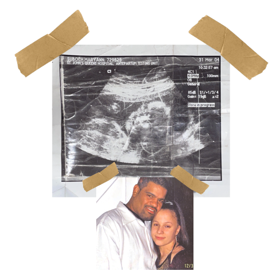
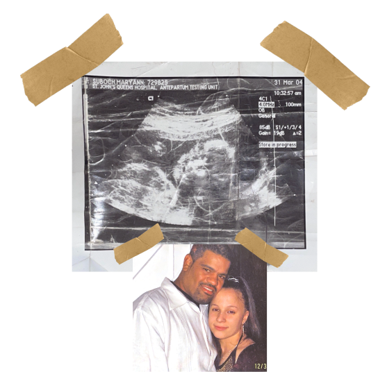
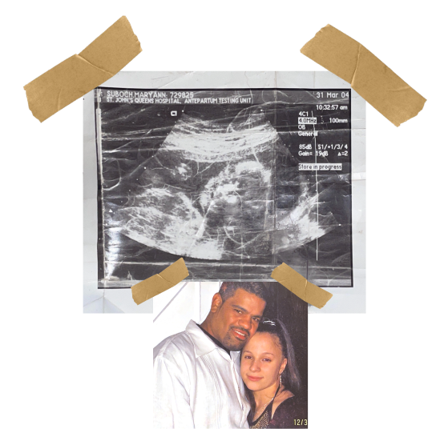
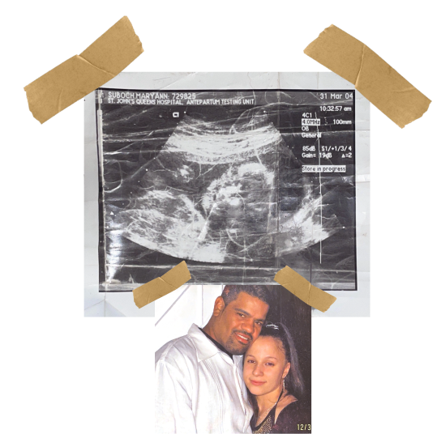

Where it all began...
This sonogram was taken in March of 2004, at St. Johns Queens Hospital, which has now been closed down. Who would’ve thought 18 years later this same little girl would attend a college with the same name? My mom always said I was smiling in this photo, not much has changed.
There’s something profoundly beautiful about witnessing a life before it’s fully realized— when the future is wide open, filled with endless possibilities and untapped potential. It’s a reminder of how far we’ve come and how much we can still become.